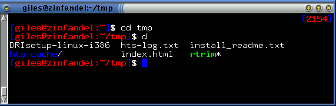

I've rewritten this prompt several times. It was originally written using octal escape sequences, but the ones I needed most for this (save and restore cursor position) aren't honoured by one of the commonest terminal emulators, rxvt. I rewrote it using tput, and that's what you see here. The required tput codes seem to be universally honoured. The body of the prompt is essentially the same as the "Lightweight" prompt shown earlier, but a clock is kept floating in the upper right corner of the term. It will reposition itself correctly even if the term is resized.
#!/bin/bash
# Rewrite of "clock" using tput
function prompt_command {
# prompt_x is where to position the cursor to write the clock
let prompt_x=$(tput cols)-6
# Move up one; not sure why we need to do this, but without this, I always
# got an extra blank line between prompts
tput cuu1
tput sc
tput cup 0 ${prompt_x}
tput setaf 4 ; tput bold
echo -n "["
tput setaf 1
echo -n "$(date +%H%M)"
tput setaf 4 ; tput bold
echo -n "]"
tput rc
}
PROMPT_COMMAND=prompt_command
function clockt {
local BLUE="\[$(tput setaf 4 ; tput bold)\]"
local LIGHT_RED="\[$(tput setaf 1 ; tput bold)\]"
local WHITE="\[$(tput setaf 7 ; tput bold)\]"
local NO_COLOUR="\[$(tput sgr0)\]"
case $TERM in
xterm*|rxvt*)
TITLEBAR='\[\033]0;\u@\h:\w\007\]'
;;
*)
TITLEBAR=""
;;
esac
PS1="${TITLEBAR}\
$BLUE[$LIGHT_RED\u@\h:\w$BLUE]\
$WHITE\$$NO_COLOUR "
PS2='> '
PS4='+ '
}
|

The floating clock prompt in action. The clock will stay in correct position even if the term is resized.